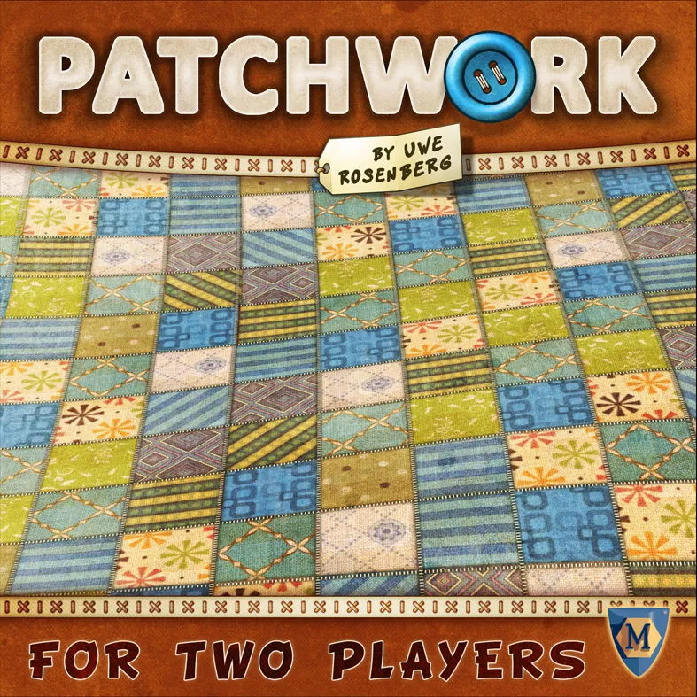

Board Game Review

Patchwork
I'm delighted to share my thoughts on a charming and engaging game that has woven its way into the hearts of many: Patchwork. Designed by renowned game designer Uwe Rosenberg and published by Lookout Games, this two-player game invites players to create beautiful quilts by skillfully selecting and arranging patch-shaped tiles.
Components
Patchwork comes in a compact box, containing 33 patch tiles, 1 central time board, 2 quilt boards, 2 time tokens, 1 neutral token, 5 special one-square patches, 50 button tokens, and a rulebook. The components are of good quality, with sturdy cardboard tiles and tokens that feature appealing and colorful artwork. The quilt boards and central time board are made of thick, durable cardboard, ensuring they can withstand multiple plays.
Gameplay
Patchwork is a tile-laying, puzzle game for two players. Players take turns selecting patch tiles from a shared pool, with each tile representing a piece of fabric in various shapes and sizes. Each patch tile has a cost in buttons (the game's currency) and a time value, which determines how far a player's time token moves on the central time board.
Players must strategically select and arrange patch tiles on their quilt board, aiming to fill as much space as possible while minimizing gaps. Some patch tiles also feature button icons, which generate income when players pass certain points on the time board. The game ends when both players reach the end of the time track, and the player with the highest score, calculated by subtracting the number of empty squares on their quilt board from their total buttons, is declared the winner.
Playing Time and Replayability
A game of Patchwork typically takes around 30 minutes, making it a great choice for quick gaming sessions or as a warm-up game before moving on to heavier titles. The game offers high replayability due to the unique combination of patch tiles in each playthrough, encouraging players to adapt their strategies and explore new approaches to building their quilts.
Conclusion
Patchwork is a delightful and engaging game that provides a satisfying blend of strategy, decision-making, and puzzle-solving. Its accessible mechanics and high replayability make it a wonderful addition to any board game collection, particularly for fans of two-player games or those who enjoy spatial puzzle challenges. Embrace your inner quilter and embark on a cozy and competitive journey, skillfully stitching together a beautiful quilt that will leave your opponent in awe.
Did you enjoy my review of this game? Check out one of my favorite board game reviews below or see a
list of my reviews!
More importantly, I'm always looking for new games to enjoy. Let
me know what you're currently playing!
My Favorites
Read why these board games are my all-time favorites!